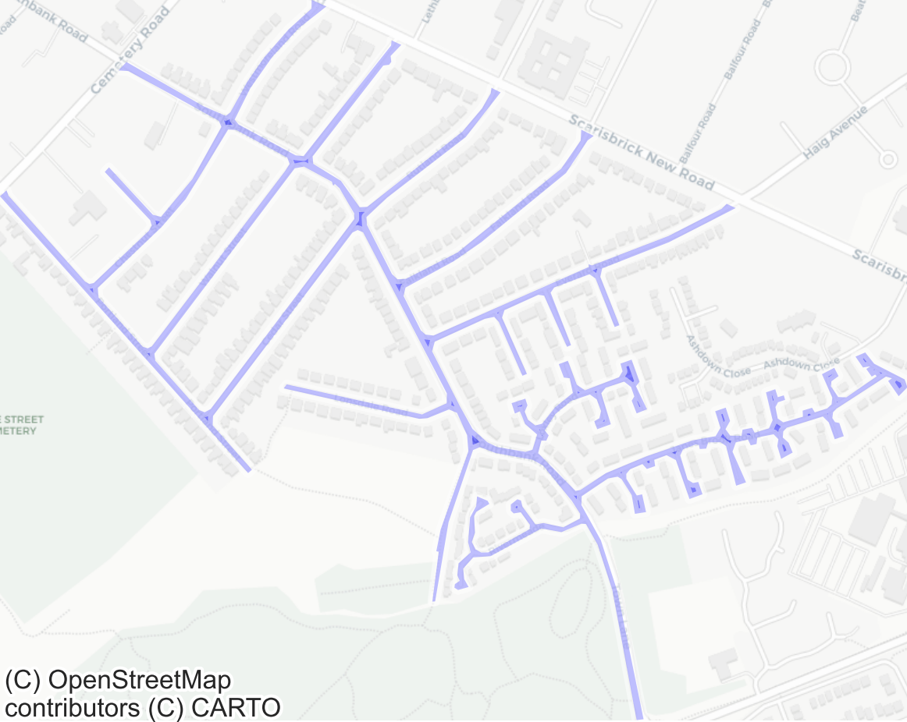
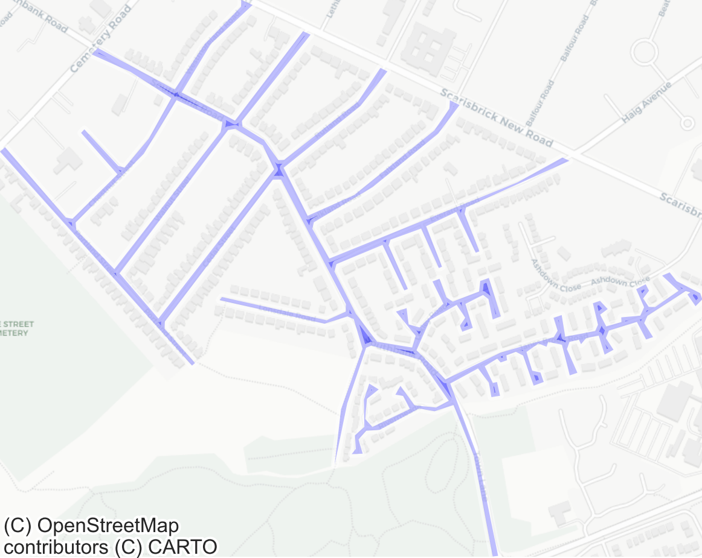
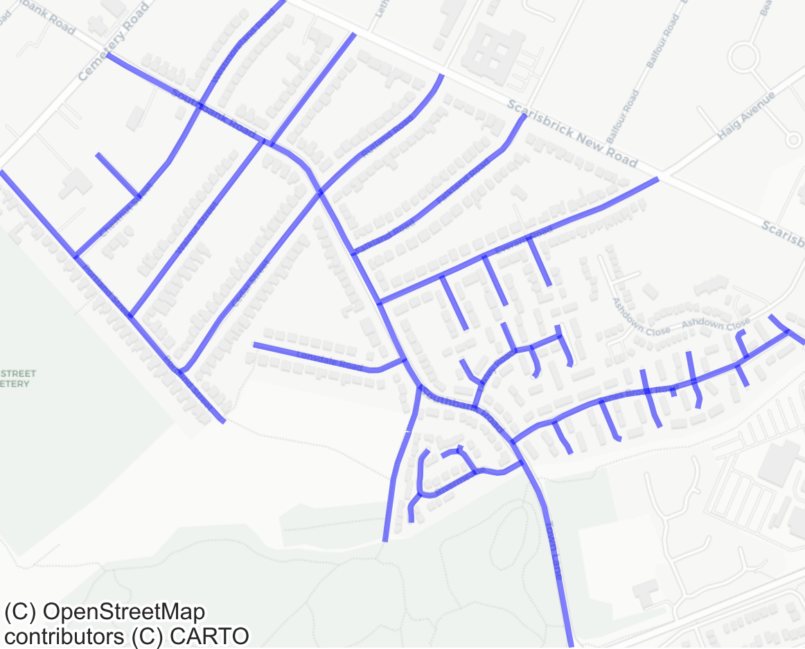

Large D-TRO Guidance¶
This section provides advice on the submission of large payloads to the D-TRO service.
Background¶
As the D-TRO service matures, it is seeing larger and larger payloads being submitted. The vast majority of submitted orders are very small, and pose no problems during submission. However, payload size is skewed by the large number of submitted temporary orders; permanent and consultation orders are comparatively rare, and tend to be larger in size.
The service itself has a fixed, maximum body/file size of 10MB. Payloads that exceed this limit cannot be submitted to the service, and must be compressed to below this limit in order to be submitted. The service provides a mechanism for submitting gzip-compressed files (see section Submitting a gzip-compressed file for details).
Although gzip compression may allow a file exceeding 10MB to be compressed to something smaller and sent to the server, the server must still decompress this on the other end, before performing schema validation, code-side validation, metadata parsing and saving to the database. For large payload sizes, this can consume large amounts of memory and resources, and lead to container exhaustion and ultimately failures in submissions.
Solutions¶
Often, retrying the submission is the easiest first step in successfully submitting large payloads. The success of submission is dependant on what else is happening in the service; at periods of low usage, more resources can be dedicated to the processing of large D-TROs, while at periods of high usage there is less resource available. Therefore, careful consideration of when to submit large D-TROs can help yield more successful submissions (e.g. during the early hours of the morning, when traffic is low).
The most effective way to ensure successful submission of D-TROs is to ensure that payload sizes are kept to a minimum. We discuss several solutions for achieveing this below.
1. Minifying JSON payload structure¶
The first and simplest technique to reduce payload size is to ensure that payloads are minified by removing unnecessary whitespace. In JSON, whitespace (outside of string literals) is ignored, so stripping it has no impact on functionality. Minifying payloads before sending them to the D-TRO service can significantly reduce their size, improving transfer efficiency. Many tools provide minification functionality, including text editors such as VS Code and command-line tools like jq.
2. Reducing structural repetition of regulated places¶
Representation of regulated places is prone to structural repetition. Consider the following regulated place structure:
{
"regulatedPlace": [
{
"assignment": false,
"busRoute": false,
"bywayType": "road",
"concession": false,
"description": "SHERWOOD AVENUE - side of road: north-west",
"linearGeometry": {
"direction": "bidirectional",
"lateralPosition": "near",
"linestring": "SRID=27700;LINESTRING(456957.9245 359159.4095,456870.2547 359022.8078)",
"representation": "linear",
"version": 1
},
"tramcar": false,
"type": "regulationLocation"
},
{
"assignment": false,
"busRoute": false,
"bywayType": "road",
"concession": false,
"description": "SHERWOOD AVENUE - side of road: north-west",
"linearGeometry": {
"direction": "bidirectional",
"lateralPosition": "near",
"linestring": "SRID=27700;LINESTRING(456990.7984 359223.6339,456963.5107 359166.3777)",
"representation": "linear",
"version": 1
},
"tramcar": false,
"type": "regulationLocation"
}
]
}
This example contains two regulated places, and illustrates a large degree of structural repetition. With the exception of the specific geometry LINESTRINGs, both regulated places contain exactly the same information. The data model supports a mechanism for representing this data more compactly; specifically, these regulated places can be collapsed into one, and the geometries combined into a MULTILINESTRING. It is structurally equivalent to the following:
{
"regulatedPlace": [
{
"assignment": false,
"busRoute": false,
"bywayType": "road",
"concession": false,
"description": "SHERWOOD AVENUE - side of road: north-west",
"linearGeometry": {
"direction": "bidirectional",
"lateralPosition": "near",
"linestring": "SRID=27700;MULTILINESTRING((456990.7984 359223.6339,456963.5107 359166.3777), (456957.9245 359159.4095,456870.2547 359022.8078))",
"representation": "linear",
"version": 1
},
"tramcar": false,
"type": "regulationLocation"
}
]
}
Analysis of some of the largest D-TROs in the service shows that size reductions of up to 75% can be achieved with this method.
3. Geometry simplification¶
A. Geometry simplification algorithms¶
In some cases, geometries submitted to the D-TRO service are highly granular and of very high accuracy. Whilst accurate geometry is encouraged, it is important to consider the trade-off between accuracy and complexity.
High-fidelity geometries can significantly increase payload size. Applying geometry simplification algorithms (such as Douglas-Peucker) can drastically reduce this complexity, while preserving the overall shape within a defined tolerance.
Consider the following geometries. The left-hand image represents the original geometry, and the right-hand image shows a simplified version produced using the Douglas-Peucker algorithm with a tolerance of 5m. This results in a 40% reduction in size.
Original geometry

Simplified geometry

Analysis of some of the largest D-TROs in the service indicates that payload size reductions of up to 80% can be achieved through the application of simplification algorithms, while remaining within acceptable tolerance limits.
B. Simplifying geometries through representational changes¶
The choice of geometry type can also have a significant impact on payload size.
Consider the same example geometry as above, which closely follows the road network but is instead represented as a LINESTRING rather than a POLYGON
Original polygon representation
Linestring representation

The LINESTRING representation achieves a 62% reduction in size compared to the original POLYGON.
Careful consideration of how geometries are represented - selecting the simplest form that still accurately conveys intent - can therefore have a significant effect on overall payload size. Where possible, both simplification algorithms and appropriate geometry representation should be used in combination to minimise payload size.
Future-proofing¶
Whilst these techniques can yield excellent payload size reductions, there are legitimately large D-TROs for which these techniques are inappropriate or not possible. DfT are actively investigating a robust and scalable solution to the problem of submitting large D-TROs. This may include core architecture changes to the service around how D-TROs are stored, and how clients publish to/consume from the service. The DfT has established the Large D-TRO Working Group to assist in this process, and will provide timely updates as necessary to support clients with the changes required once the solution is defined and developed.